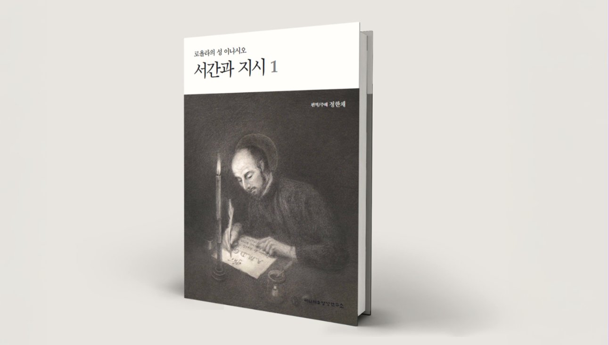
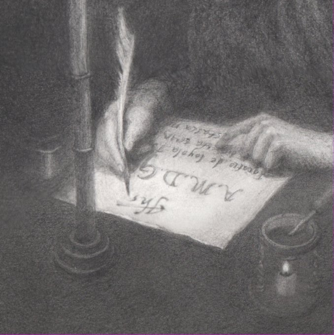

Book Cover Illustration
— Fine Illustration & Book Cover Design
Classic Pencil-Shaded Illustration and Editorial Cover Design for Historical Publication.

Blended traditional monochromatic shading techniques with refined typography to capture the solemn, contemplative atmosphere of Saint Ignatius of Loyola.
01. Strategy & Concept
Background: Designing a book cover for historical letters and directives by Saint Ignatius of Loyola, requiring an authentic, classic visual tone.
Core Goal: Translate historical depth and spiritual contemplation into a compelling visual language through custom fine-art illustration.
Creative Approach: Selected traditional graphite/pencil shading to evoke the ambiance of a 16th-century scholar writing under candlelight.
02. Fine Art Illustration & Craftsmanship
Artistic Execution: Hand-rendered monochromatic illustration focusing on light contrast (Chiaroscuro effect) from the candle, capturing delicate facial expressions and historic clothing details.
Visual Storytelling: Depicted Saint Ignatius at his writing desk with historical elements (quill, manuscript, candle) to reinforce the authenticity of his primary texts.

03. Commercial Value & Creative Asset
Cross-Domain Versatility: Demonstrates craftsmanship and high-level visual artwork capabilities that elevate brand storytelling beyond standard digital graphics.
Human-Centered Touch: A unique creative asset capable of bringing emotional depth and warmth to B2B, medical, or corporate branding initiatives.